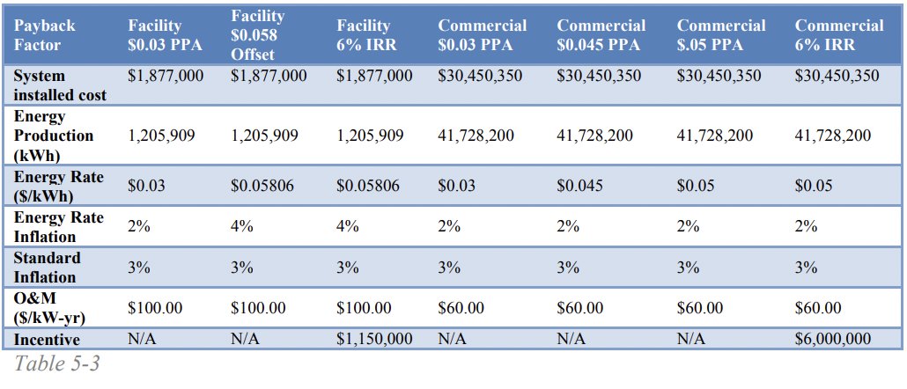
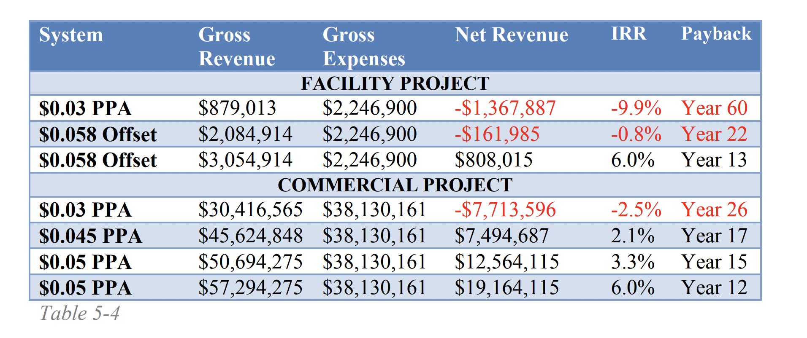

- -WTG (wind turbine generator)
- -WTG Installation
- -O&M Building (Commercial Project)
- -Met Tower
- -Project Management/Misc. Overhead
- -Engineering/Surveying
- -Substation
- -Collection System
- -Sitework
- -Foundations
This analysis is done to explore different tax incentives and the impact they have on the year this project will pay back the costs it incurred over its 20 year life-time.
Most efficient tax incentive / return money the quickest 6% IRR , $0.05 PPA
How do we know these will be financially successful?
BCR of implementing this wind turbine project in the Sioux community over the next 20 years.
BCR = PV (Present Value) of Benefit / PV of Cost
= Gross Revenue / Gross-Total Cost
= 57,294,275 / $38,130,161 = 1.503
1.503 > 1 —> tells us this is a financially successful plan
Envirnmental Quality
● Indigenous communities have been deeply affected by extractive industries such as fossil fuel and uranium mining.
● When Tribal Nations pursue fossil fuel extraction as an economic opportunity, they bear the brunt of health and environmental impacts from these industries
● Shifting away from fossil fuels can also help protect other economic industries that support Tribal communities
● The Red Lake Nation is pursuing renewable energy after they found high amounts of mercury in its walleye population, which came from the burning of fossil fuels. The Red Lake fisheries is the Tribe’s oldest business, so transitioning to renewable energy can help protect it .
Cultural Considerations
● From earliest times, the Indigenous people of North America have regarded not only the land, but also water, minerals, plants, animals, and indeed the air we breathe as being resources that are available for all to use, forever.
● Shifting from fossil fuels to renewable energy can help to protect these resources for future generations
● Including communities in the decision-making and planning process for implementing renewable energy on tribal lands to make sure their values are respected
Social and Community Dynamics
● Provide new jobs to Native Americans
● Community empowerment and engagement
● Implementing renewable energy systems themselves can help increase a Tribe’s sovereignty
Tech/infrastructure challenges
● The most significant barriers to the development of renewable energy on Tribal lands are a lack of financing, infrastructure, training in renewable energy careers, resources to access that training, and inadequately supported Tribal leadership and staff
● Small-scale projects are not economically feasible as an alternative to grid connection, large-scale projects require significant outside capital, and high infrastructure costs are necessary to reach remote locations